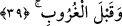

39. (Rasûlüm!) Onların dediklerine sabret. Güneşin doğuşundan önce de,
batışından önce de Rabbini hamd ile tesbih et.
“(Rasûlüm!) Onların dediklerine sabret.”
Tefsîru’l-münâsebât’ta şöyle geçer: Allah Sübhânehû ilminin şümûlüne ve kudretinin
kuşatıcılığına delâlet etmiş ve de bu ikisini tam anlamıyla açıklığa kavuşturmuş
olduğuna göre “el-Habîb”, “el-Kàdir” olanın düşmanın yaptıklarını bilmesi, düşmana
karşı en büyük uyarıdır ve de dost için müjdedir. İşte bu sebeple şöyle buyurdu;
“Onların dediklerine karşı sabret” Yani kâfirlerin ve başkalarının söyledikleri
herşeye karşı sabırlı ol.
Bu âyette nefisleri sürekli zikir, tesbîhât ve hamdde bulunmak sûretiyle câhillerin
söyledikleri her türlü kötü söze karşı sabırla terbiye etmeye ve zemmedilmiş sıfatlardan
arındırmaya da bir işâret vardır.
“Güneşin doğuşundan önce de, batışından önce de Rabbini hamd ile tesbih et.”
Nitekim “Rabbini hamdederek onu tesbih et” (en-Nasr, 110/3) âyetinde de aynı şey
emrolunmaktadır. Tesbih et, yani Allah Teâlâ’yı mümkün şeyler husûsunda acziyete
düşmekten ve verdiği haberlerin vuku bulmayacağı, çelişeceği gibi hususlardan tenzih
et. Bu haberlerden birisi de dirilmenin gerçekleşeceğini bildirmesi ve bunu da teşbihi
gerekli kılacak bir şekilde söylemesidir. Allah’ı tenzih ederken hakikate isabet etme ve
diğer nimetlerine karşı hamd içerisinde olmayı da unutma.
Sehl, el-Emâlî’de şöyle demiştir: Hamdin hem bu âyette olduğu, hem de “Hiçbir şey
yoktur ki O’nu hamdiyle tesbih etmesin” (el-İsra, 17/44) âyetinde de olduğu gibi
sürekli tesbihle birlikte zikredilmesinin sırrı, Marifetullahın ikiye ayrılmakta oluşudur.
Bunlar, Allah’ın zatını bilmek ve esmâsı ile sıfatlarını bilmektir. Bunlardan birini elde
etmeden diğeri de elde edilemez. Zâtın varlığının bilgisine ulaşmak aklın gereği iken
esmâ ve sıfatın bilgisine ulaşmak da şerîatın muktezâsıdır.
Akılla müsemmî bilinirken şeriatla da müsemma (O’nun isim ve sıfatları) bilinir.
Zâtın akılda kabûlü, sonradan olmaya dair özelliklerin kendisinden nefyedilmesine
bağlıdır ki bu da tesbihtir. Aklın muktezâsı, şeriatın muktezâsına mukaddemdir. Menkul
olan şeriat, insandaki düşünme gücünden (nazar) ve akıllardan sonra gelmiş, akıllara
nazarı/düşünmeyi tenbih etmiş, sonra da ona daha önce bilmediği esmayı bildirmiştir.
İşte bundan dolayı tesbih hamd ü senâ ile birlikte anıldı ve biz güneşin doğuşundan
önce de, batışından önce de yalnızca Allah’ı hamd ile tesbih etmekle emrolunduk. Bu
iki vakit, fecir ve ikindidir ki ne kadar faziletli olduklarını herkes bilir. Bu vakitlerde
Allah’ı tesbih etmek gerçekten çok önemli ve çok faziletlidir. Bununla ilgili olarak Tâ
Hâ suresinde de “Güneşin doğuşundan ve batışından önce” (Ta Ha, 20/130)
buyurulmuştur. Dolayısıyla burada tefsiri yapılan Kaf suresi 39. Âyette bahsedilen
“doğuş” güneşin olduğu gibi, “batış” da güneşe âiddir.